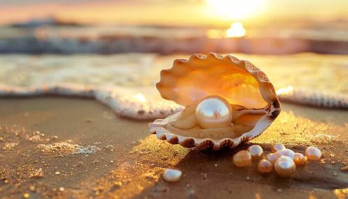
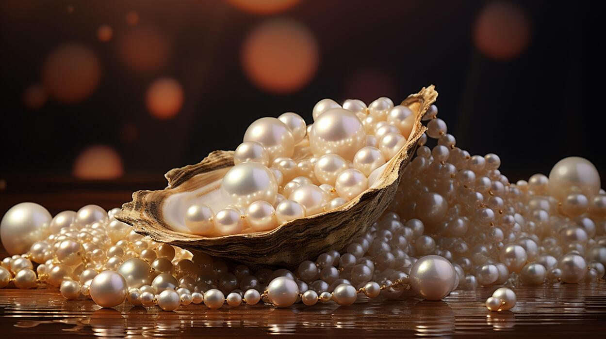

Ready to explore Blue Shells? We bring you an exclusive collection of rare finds and thrilling experiences for the modern adventurer.
Uncover your next treasure today!


The system is an IoT-based automated water quality management solution designed specifically for freshwater pearl farming and aquaculture applications. The system minimizes manual intervention, reduces operational cost, and improves mussel health and pearl yield through intelligent parameter control.
The core of the system is a microcontroller-based control unit that continuously monitors critical parameters such as pH and temperature, while maintaining dissolved oxygen (DO) through a timing-based aeration strategy, eliminating the need for costly DO sensors.
Instead of directly measuring ammonia—which requires expensive probes—the system uses the scientifically established interconnection between pH and ammonia ($\text{NH}_3/\text{NH}_4^+$) to indirectly detect the presence of ammonia in the culture tank. Since ammonia is naturally present due to mussel excretory waste and feed residues, a rise in pH beyond safe limits reliably indicates increased ammonia concentration.
A calibrated timer activates the aeration pump periodically to maintain dissolved oxygen above the threshold required for mussel survival and growth.
When pH drops below 6.5, a controlled lime (CaCO₃) dosing mechanism is triggered. This stabilizes pH and improves shell strength and overall mussel health.
When pH exceeds 7.5, the system initiates an automatic partial water exchange, replacing tank water with fresh water to restore pH naturally.
Continuously tracks water temperature and quality parameters to ensure an optimal environment for freshwater mussel health and pearl development.
Automated Efficiency: All actions are performed automatically without human intervention, ensuring consistent water quality and reducing labor dependency. The timer-based aeration system operates on a validated cycle (15 min ON / 2 hrs 45 min OFF) to restore DO from 4.0 to 6.5 mg/L without needing expensive dissolved oxygen sensors.
The system is designed to operate on solar power, making it suitable for rural and off-grid farming environments. Its modular architecture allows easy scaling for different tank sizes and aquaculture species.